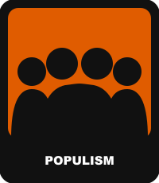
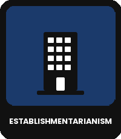
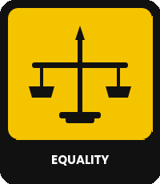
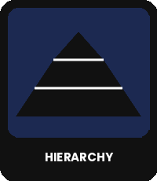
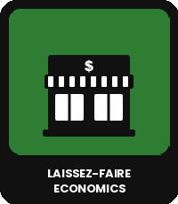
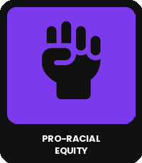
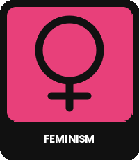
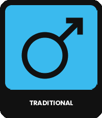
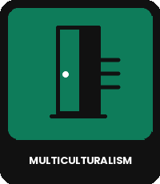
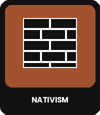
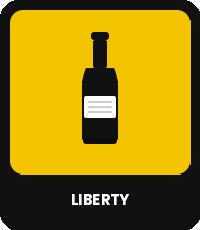
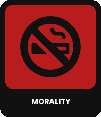
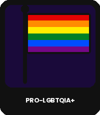
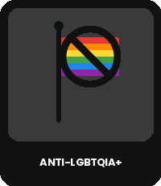
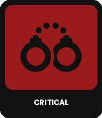
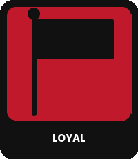
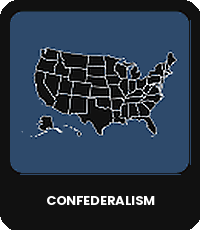
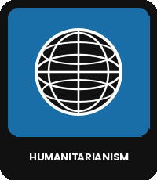
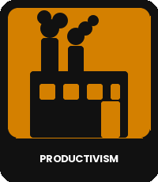
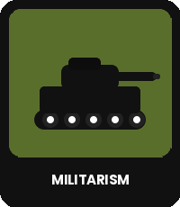
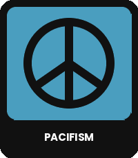
Extremely right-wing. Wants to reverse major social, economic, or cultural changes and restore an earlier order.
Strongly right-wing. Defends tradition and opposes further change.
Moderately right-wing. Leans on tradition but accepts gradual reform.
Centrist. Balances reform with continuity.
Moderately left-wing. Wants reform but not a fundamental break from established institutions and traditions.
Strongly left-wing. Wants broad reforms to change society.
Extremely left-wing. Wants fundamental reform of the current order.
Backs a strong government that enforces economic and social conservatism and pursues national interests abroad.
Backs a strong government that enforces economic and social conservatism, but keeps foreign intervention limited.
Wants a limited federal government at home while staying economically and socially conservative. Backs strong foreign intervention to advance national interests.
Wants a limited federal government at home while staying economically and socially conservative. Keeps foreign intervention limited.
Wants a strong government to reduce social and economic inequality. Backs intervention abroad to promote human rights.
Wants a strong government to reduce social and economic inequality. Backs intervention abroad to advance national interests.
Wants a limited government but supports social and economic change that reduces inequality. Favors little foreign intervention, focused on human rights.
Accepts economic hierarchy but supports social liberties and the rights of marginalized racial, gender, and sexual minorities. Uses government to protect those rights and keeps foreign intervention limited.
Accepts economic hierarchy but supports social liberties and the rights of marginalized racial, gender, and sexual minorities. Uses government to protect those rights and embraces foreign intervention.
Accepts economic hierarchy but supports social liberties and the rights of marginalized racial, gender, and sexual minorities. Wants limited government at home and an active one abroad.
Accepts economic hierarchy but supports social liberties and the rights of marginalized racial, gender, and sexual minorities. Wants limited government at home and abroad.
Socially conservative, but uses a strong central government to elevate the economically struggling.
Socially conservative and hostile to economic elites. Skeptical of strong government.